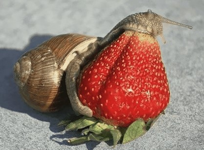

Ваш питомец — улитка
Александра Лупанова
Сегодня мало кого можно удивить необычными домашними питомцами. Наравне с кошками и собаками
мы всё чаще приобретаем маленьких смышлёных мангустов и сурикат, декоративных попугаев, забавных
карликовых
поросят. Немало и любителей террариумных животных — крокодилов, змей, игуан, варанов,
хамелеонов. Даже
насекомых!
Среди всего этого многообразия своё место заняли улитки:
- сухопутные брюхоногие улитки
- гигантские африканские ахатины
- миниатюрные лимиколярии
- караколусы
- виноградные улитки

Улитки — растительноядные животные. Основу их рациона составляют:
- Овощи
- Фрукты
- Листья и цветки диких растений
- Мох и лишайник
- Зерновая смесь

Наука и жизнь. Ваш питомец — улитка